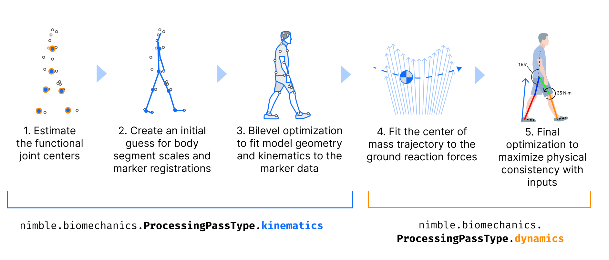

Working with AddBiomechanics Data
What is AddBiomechanics?
AddBiomechanics is an open source cloud-based motion capture processing tool, built by the same people behind Nimble. It is designed to be a simple, easy to use, and free way to process motion capture data, and get it into a format that is easy to use for biomechanics research. The tool automates previously time-consuming and error-prone steps in the motion capture processing pipeline, such as scaling a skeleton model, tweaking marker placement on the model, and tuning the link masses and motion to match experimental force data. You can learn more at the AddBiomechanics Webinar, or from the paper in PLOS One.
Most importantly, AddBiomechanics requires that all data that is uploaded to the tool be made available to the public, so that anyone can use it for research!
If you’re reading this, in all likelihood you’re interested in using AddBiomechanics data for research, not using the AddBiomechanics tool itself for motion capture processing. This page will help you understand how to use AddBiomechanics data, whether to train ML models, or to do fundamental biomechanics research.
Where can I download the aggregated data?
You can download three sample B3D files from here.
Our first big public dataset release is still in peer review, and will be made publicly available when it is accepted.
We plan to periodically release public snapshots of the dataset from AddBiomechanics, as we clean it and manually verify quality. The main challenge is that the data is very large (100+ hours and counting), and we want to make sure that we’re releasing data that is as clean as possible, so that you can trust it for your research.
How can I download my own lab’s data?
If you are processing your own data on AddBiomechanics (or if someone else sent you a link to their data), you can get
data out in two formats. One is the “standard” OpenSim format, which is a zip of a folder with a bunch of files in it which you can work with using
OpenSim. The other is a single *.b3d file, which is an efficient binary file that contains all the data
for all the trials you’ve processed, and can be read with Nimble.
The AddBiomechanics GUI will let you download either of these formats. If you want to download the *.b3d file, you can do so by clicking the
“Download Results, B3D Format” button.
{kind=link}
IMPORTANT NOTE: Please try to minimize the number of times you download the data (definitely do not download the same file over and over again from our servers in a script) because AWS charges us extortionate fees for downloads, and it adds up quite quickly. It’s better to download your subject files once, and then put the files on your local Google Drive, Drobox, or other cloud storage, and then re-download from there if you need it on other machines.
Contents of a B3D File
A B3D file on disk contains a compressed binary representation of all the data for all the trials you’ve processed for a single subject, along with the scaled and mass-tuned skeleton model, and all the raw sensor inputs.
AddBiomechanics works on your data in “passes”, and records each pass separately in the B3D.
{kind=link}
The “kinematics” pass, labeled with the enum nimble.biomechanics.ProcessingPassType.kinematics, uses only the marker data to solve for the
skeleton’s bone scales, marker offsets on the bones, and the poses of the skeleton for each frame.
The “dynamics” pass, labeled with the enum nimble.biomechanics.ProcessingPassType.dynamics, takes as input the previous pass outputs
(generally the kinematics pass), and then further solves for the mass distribution, fine tunes bone scales, and tunes motion of the skeleton
that best matches the experimental force data.
There is another kind of pass, the “low pass filter” pass, labeled with the enum nimble.biomechanics.ProcessingPassType.lowPassFilter, which
does exactly what it says on the tin: takes the output of the previous pass, and applies a low pass filter to it. AddBiomechanics will generally apply
a low pass filter to the output of each kinematics pass, before using it as input to the dynamics pass. It may also apply another low pass filter
to the output of the dynamics pass.
Importantly, the outputs from every processing pass are saved separately in the B3D file, so you can go back and see what came out of each pass!
This is especially important for machine learning projects that are trying to predict physical data (like ground reaction force or joint torques) from motion data.
If you want to train a model to predict ground reaction force, you should use as input features only the kinematics pass, because that data has never
“seen” the force plate data during optimization. If you use the output of the dynamics pass, you will be training your model on data that has already been
fine tuned to match the force plate data, and your model will overfit to the clues that the optimizer inserts into the motion to match the force plate data!
Loading and Visualizing Skeletons from a B3D
It always helps to see what you are doing, so let’s start by loading a skeleton from a B3D file, and visualizing it in the Nimble GUI.
Let’s assume you have downloaded a the Falisse2017_subject_1.b3d sample file to your/path/Falisse2017_subject_1.b3d.
Further, let us assume that you have downloaded the generic bone geometry library to some/folder/path/to/Geometry. You can get that from here.
import nimblephysics as nimble
# Load the model
your_subject = nimble.biomechanics.SubjectOnDisk("your/path/Falisse2017_subject_1.b3d")
# Read the skeleton that was optimized by the first process pass (always kinematics)
# Use the geometryFolder argument to specify where to load the bone mesh geometry from
skeleton: nimble.dynamics.Skeleton = your_subject.readSkel(
processingPass=0,
geometryFolder="some/folder/path/to/Geometry")
# Create a GUI
gui = nimble.NimbleGUI()
# Serve the GUI on port 8080
gui.serve(8080)
# Render the skeleton to the GUI
gui.nativeAPI().renderSkeleton(skeleton)
# Block until the GUI is closed
gui.blockWhileServing()
You can then open a browser to http://localhost:8080 to see the skeleton in the GUI.
But that’s not very interesting, because it’s just a skeleton in a neutral pose. Let’s also load and render some motion data!
To do that, we will use the loadFrames method on SubjectOnDisk, which will load (as many as we request)
Frame objects from the B3D file. The Frame objects contain all the information about the skeleton’s state at that frame,
and contain information for each processing pass separately. If we do this in a loop, we can animate the skeleton in the GUI!
import nimblephysics as nimble
from typing import List
import time
# Load the model
your_subject = nimble.biomechanics.SubjectOnDisk("your/path/Falisse2017_subject_1.b3d")
# Read the skeleton that was optimized by the first process pass (always kinematics)
# Use the geometryFolder argument to specify where to load the bone mesh geometry from
skeleton: nimble.dynamics.Skeleton = your_subject.readSkel(
processingPass=0,
geometryFolder="some/folder/path/to/Geometry")
# Create a GUI
gui = nimble.NimbleGUI()
# Serve the GUI on port 8080
gui.serve(8080)
# A B3D file contains multiple trials of data, so we need to select which one we want to load
trial = 0
# Load all the frames from the selected trial
trial_frames: List[nimble.biomechanics.Frame] = your_subject.loadFrames(
trial=trial,
processingPass=0,
startFrame=0,
endFrame=your_subject.getTrialLength(trial))
# Figure out how many (fractional) seconds each frame represents
seconds_per_frame = your_subject.getTrialTimestep(trial)
# Loop through all the frames, and render them to the GUI
frame = 0
while True:
# Get the frame we want to render
frame_to_render = trial_frames[frame]
# Set the skeleton's state to the state in the frame
skeleton.setPositions(frame_to_render.processingPasses[0].pos)
# Render the skeleton to the GUI
gui.nativeAPI().renderSkeleton(skeleton)
# Sleep for the appropriate amount of time
time.sleep(seconds_per_frame)
# Increment the frame counter
frame += 1
if frame >= len(trial_frames):
frame = 0
That should loop through the frames of trial 0, and display them to the GUI. There is a LOT more you can do with a B3D file, but this should get you started!
Machine Learning with B3D Files
A reference for training ML models with B3D files is available in the InferBiomechanics repo. That repo trains a model to predict ground-reaction-force and joint torques from motion data, and is a good starting point for training your own models.
B3D files are laid out on disk so that you can efficiently load frames at random from the file, without loading the entire file into memory. This is helpful for training ML systems on large amounts of training data, which might otherwise overwhelm the amount of RAM available on your machine.
To load a file at your/path/your_subject_name.b3d, simply instantiate a your_subject = nimble.biomechanics.SubjectOnDisk("your/path/your_subject_name.b3d").
Note that instantiating SubjectOnDisk does not load all the trials into memory, it merely keeps a lightweight index of the file in memory, which can then load
arbitrary frames of trials quickly and efficiently. It’s safe to load an enormous number of SubjectOnDisk files simultaneously, even with very limited RAM.
Once you have a SubjectOnDisk, the main point of a SubjectOnDisk is to load arrays of Frame objects by calling frames = your_subject.loadFrames(...).
Each Frame contains all the information to set the state of the skeleton corresponding to this subject, which you can get copies of by calling skel = your_subject.readSkel(...).
With a skeleton set in the correct state, with contact and dynamics information known, you’re ready to derive any additional information you need to train your ML system!
Performance Considerations for Machine Learning with B3Ds
When training AI models, it is very often the case that you are bottlenecked not by the speed of your floating point units on the GPU, but by the speed at which you can deliver them data. When paging through hundreds of gigabytes of motion data from disk at random, it is important to be able to do so efficiently. We recommend a multi-threaded loader. A reference is available in the InferBiomechanics repo. Check out the dataset implementation and the training implementation.
The key is using PyTorch’s DataLoader class with num_workers more than 1. This will allow you to load data from disk in parallel with training, which is critical for training large models on large datasets.
The trick is that PyTorch’s parallel implementation relies on being able to pickle the Dataset you’re loading from, which will contain a bunch of nimble.biomechanics.SubjectOnDisk objects, but nimble.biomechanics.SubjectOnDisk is not picklable.
To get around this, you must implement __getstate__ and __setstate__ for your Dataset class to pickle the SubjectOnDisk files as simply their path on disk (with an example here), and then recreate them on unpickling (here).
This is ok to do, because SubjectOnDisk is extremely lightweight, and can be recreated very quickly. It only loads a very small header from the file into memory, so that it knows where to seek to read frames as requested.
Having lots of copies of SubjectOnDisk in memory in different processes is not a problem, because they are each so lightweight.
API Reference
- class nimblephysics.biomechanics.SubjectOnDisk
This is for doing ML and large-scale data analysis. The idea here is to create a lazy-loadable view of a subject, where everything remains on disk until asked for. That way we can instantiate thousands of these in memory, and not worry about OOM’ing a machine.
- getAgeYears(self: nimblephysics_libs._nimblephysics.biomechanics.SubjectOnDisk) int
This returns the age of the subject, or 0 if unknown.
- getBiologicalSex(self: nimblephysics_libs._nimblephysics.biomechanics.SubjectOnDisk) str
This returns a string, one of “male”, “female”, or “unknown”.
- getCustomValueDim(self: nimblephysics_libs._nimblephysics.biomechanics.SubjectOnDisk, valueName: str) int
This returns the dimension of the custom value specified by
valueName
- getCustomValues(self: nimblephysics_libs._nimblephysics.biomechanics.SubjectOnDisk) List[str]
A list of all the different types of custom values that this SubjectOnDisk contains. These are unspecified, and are intended to allow an easy extension of the format to unusual types of data (like exoskeleton torques or unusual physical sensors) that may be present on some subjects but not others.
- getDofAccelerationsFiniteDifferenced(self: nimblephysics_libs._nimblephysics.biomechanics.SubjectOnDisk, trial: int, processingPass: int) List[bool]
This returns the vector of booleans indicating which DOFs have their accelerations from finite-differencing during this trial (as opposed to observed directly through a accelerometer or IMU)
- getDofPositionsObserved(self: nimblephysics_libs._nimblephysics.biomechanics.SubjectOnDisk, trial: int, processingPass: int) List[bool]
This returns the vector of booleans indicating which DOFs have their positions observed during this trial
- getDofVelocitiesFiniteDifferenced(self: nimblephysics_libs._nimblephysics.biomechanics.SubjectOnDisk, trial: int, processingPass: int) List[bool]
This returns the vector of booleans indicating which DOFs have their velocities from finite-differencing during this trial (as opposed to observed directly through a gyroscope or IMU)
- getForcePlateCorners(self: nimblephysics_libs._nimblephysics.biomechanics.SubjectOnDisk, trial: int, forcePlate: int) List[numpy.ndarray[numpy.float64[3, 1]]]
Get an array of force plate corners (as 3D vectors) for the given force plate in the given trial. Empty array on out-of-bounds access.
- getForceplateCutoffs(self: nimblephysics_libs._nimblephysics.biomechanics.SubjectOnDisk, trial: int, processingPass: int) List[float]
If we reprocessed the force plates with a cutoff, then these are the cutoff values we used.
- getGroundForceBodies(self: nimblephysics_libs._nimblephysics.biomechanics.SubjectOnDisk) List[str]
A list of the
body_name’s for each body that was assumed to be able to take ground-reaction-force from force plates.
- getHeaderProto(self: nimblephysics_libs._nimblephysics.biomechanics.SubjectOnDisk) nimblephysics_libs._nimblephysics.biomechanics.SubjectOnDiskHeader
This returns the raw proto header for this subject, which can be used to write out a new B3D file
- getHeightM(self: nimblephysics_libs._nimblephysics.biomechanics.SubjectOnDisk) float
This returns the height in meters, or 0.0 if unknown.
- getHref(self: nimblephysics_libs._nimblephysics.biomechanics.SubjectOnDisk) str
The AddBiomechanics link for this subject’s data.
- getLowpassCutoffFrequency(self: nimblephysics_libs._nimblephysics.biomechanics.SubjectOnDisk, trial: int, processingPass: int) float
If we’re doing a lowpass filter on this pass, then what was the cutoff frequency of that (Butterworth) filter?
- getLowpassFilterOrder(self: nimblephysics_libs._nimblephysics.biomechanics.SubjectOnDisk, trial: int, processingPass: int) int
If we’re doing a lowpass filter on this pass, then what was the order of that (Butterworth) filter?
- getMassKg(self: nimblephysics_libs._nimblephysics.biomechanics.SubjectOnDisk) float
This returns the mass in kilograms, or 0.0 if unknown.
- getMissingGRF(self: nimblephysics_libs._nimblephysics.biomechanics.SubjectOnDisk, trial: int) List[nimblephysics_libs._nimblephysics.biomechanics.MissingGRFReason]
This returns an array of enum values, one per frame in the specified trial, each describing whether physics data can be trusted for the corresponding frame of that trial.
Each frame is either MissingGRFReason.notMissingGRF, in which case the physics data is probably trustworthy, or some other value indicating why the processing system heuristics believe that there is likely to be unmeasured external force acting on the body at this time.
WARNING: If this is true, you can’t trust the
tauoraccvalues on the corresponding frame!!This method is provided to give a cheaper way to filter out frames we want to ignore for training, without having to call the more expensive
loadFrames()and examine frames individually.
- getNotes(self: nimblephysics_libs._nimblephysics.biomechanics.SubjectOnDisk) str
The notes (if any) added by the person who uploaded this data to AddBiomechanics.
- getNumDofs(self: nimblephysics_libs._nimblephysics.biomechanics.SubjectOnDisk) int
This returns the number of DOFs for the model on this Subject
- getNumForcePlates(self: nimblephysics_libs._nimblephysics.biomechanics.SubjectOnDisk, trial: int) int
The number of force plates in the source data.
- getNumJoints(self: nimblephysics_libs._nimblephysics.biomechanics.SubjectOnDisk) int
This returns the number of joints for the model on this Subject
- getNumProcessingPasses(self: nimblephysics_libs._nimblephysics.biomechanics.SubjectOnDisk) int
This returns the number of processing passes that were successfully completed on this subject. IMPORTANT: Just because a processing pass was done for the subject does not mean that every trial will have successfully completed that processing pass. For example, some trials may lack force plate data, and thus will not have a dynamics pass that requires force plate data.
- getNumTrials(self: nimblephysics_libs._nimblephysics.biomechanics.SubjectOnDisk) int
This returns the number of trials that are in this file.
- getOpensimFileText(self: nimblephysics_libs._nimblephysics.biomechanics.SubjectOnDisk, processingPass: int) str
This will read the raw OpenSim file XML out of the SubjectOnDisk, and return it as a string.
- getProcessingPassType(self: nimblephysics_libs._nimblephysics.biomechanics.SubjectOnDisk, processingPass: int) nimblephysics_libs._nimblephysics.biomechanics.ProcessingPassType
This returns the type of processing pass at a given index, up to the number of processing passes that were done
- getSubjectTags(self: nimblephysics_libs._nimblephysics.biomechanics.SubjectOnDisk) List[str]
This returns the list of tags attached to this subject, which are arbitrary strings from the AddBiomechanics platform.
- getTrialAngularResidualNorms(self: nimblephysics_libs._nimblephysics.biomechanics.SubjectOnDisk, trial: int, processingPass: int) List[float]
This returns the vector of scalars indicating the norm of the root residual torques on each timestep of a given trial
- getTrialLength(self: nimblephysics_libs._nimblephysics.biomechanics.SubjectOnDisk, trial: int) int
This returns the length of the trial requested
- getTrialLinearResidualNorms(self: nimblephysics_libs._nimblephysics.biomechanics.SubjectOnDisk, trial: int, processingPass: int) List[float]
This returns the vector of scalars indicating the norm of the root residual forces on each timestep of a given trial
- getTrialMarkerMaxs(self: nimblephysics_libs._nimblephysics.biomechanics.SubjectOnDisk, trial: int, processingPass: int) List[float]
This returns the vector of scalars indicating the max marker error on each timestep of a given trial
- getTrialMarkerRMSs(self: nimblephysics_libs._nimblephysics.biomechanics.SubjectOnDisk, trial: int, processingPass: int) List[float]
This returns the vector of scalars indicating the RMS marker error on each timestep of a given trial
- getTrialMaxJointVelocity(self: nimblephysics_libs._nimblephysics.biomechanics.SubjectOnDisk, trial: int, processingPass: int) List[float]
This returns the vector of scalars indicating the maximum absolute velocity of all DOFs on each timestep of a given trial
- getTrialName(self: nimblephysics_libs._nimblephysics.biomechanics.SubjectOnDisk, trial: int) str
This returns the human readable name of the specified trial, given by the person who uploaded the data to AddBiomechanics. This isn’t necessary for training, but may be useful for analyzing the data.
- getTrialNumProcessingPasses(self: nimblephysics_libs._nimblephysics.biomechanics.SubjectOnDisk, trial: int) int
This returns the number of processing passes that successfully completed on this trial
- getTrialOriginalName(self: nimblephysics_libs._nimblephysics.biomechanics.SubjectOnDisk, trial: int) str
This returns the original name of the trial before it was (potentially) split into multiple pieces
- getTrialSplitIndex(self: nimblephysics_libs._nimblephysics.biomechanics.SubjectOnDisk, trial: int) int
This returns the index of the split, if this trial was the result of splitting an original trial into multiple pieces
- getTrialTags(self: nimblephysics_libs._nimblephysics.biomechanics.SubjectOnDisk, trial: int) List[str]
This returns the list of tags attached to a given trial index, which are arbitrary strings from the AddBiomechanics platform.
- getTrialTimestep(self: nimblephysics_libs._nimblephysics.biomechanics.SubjectOnDisk, trial: int) float
This returns the timestep size for the trial requested, in seconds per frame
- loadAllFrames(self: nimblephysics_libs._nimblephysics.biomechanics.SubjectOnDisk, doNotStandardizeForcePlateData: bool = False) None
This loads all the frames of data, and fills in the processing pass data matrices in the proto header classes.
- readForcePlates(self: nimblephysics_libs._nimblephysics.biomechanics.SubjectOnDisk, arg0: int) List[nimblephysics_libs._nimblephysics.biomechanics.ForcePlate]
This reads all the raw sensor data for this trial, and constructs force plates.
- readFrames(self: nimblephysics_libs._nimblephysics.biomechanics.SubjectOnDisk, trial: int, startFrame: int, numFramesToRead: int = 1, includeSensorData: bool = True, includeProcessingPasses: bool = True, stride: int = 1, contactThreshold: float = 1.0) nimblephysics_libs._nimblephysics.biomechanics.FrameList
This will read from disk and allocate a number of
Frameobjects. These Frame objects are assumed to be short-lived, to save working memory. For example, you mightreadFrames()to construct a training batch, then immediately allow the frames to go out of scope and be released after the batch backpropagates gradient and loss. On OOB access, prints an error and returns an empty vector.
- readOpenSimFile(self: nimblephysics_libs._nimblephysics.biomechanics.SubjectOnDisk, processingPass: int, geometryFolder: str = '') nimblephysics_libs._nimblephysics.biomechanics.OpenSimFile
This is functionally the same as readSkel(), except that it returns the entire OpenSim file object, which in addition to the Skeleton also contains the markerset.This will read the entire OpenSim file from the binary, and optionally use the passed in
geometryFolderto load meshes.
- readSkel(self: nimblephysics_libs._nimblephysics.biomechanics.SubjectOnDisk, processingPass: int, geometryFolder: str = '') nimblephysics_libs._nimblephysics.dynamics.Skeleton
This will read the skeleton from the binary, and optionally use the passed in
geometryFolderto load meshes. We do not bundle meshes withSubjectOnDiskfiles, to save space. If you do not pass ingeometryFolder, expect to get warnings about being unable to load meshes, and expect that your skeleton will not display if you attempt to visualize it.
- static writeB3D(path: str, header: nimblephysics_libs._nimblephysics.biomechanics.SubjectOnDiskHeader) None
- class nimblephysics.biomechanics.Frame
This is for doing ML and large-scale data analysis. This is a single frame of data, returned in a list by
SubjectOnDisk.readFrames(), which contains everything needed to reconstruct all the dynamics of a snapshot in time.- property accObservations
This is list of
Pair[str, np.ndarray]of the accelerometers observations at this frame. Accelerometers that were not observed (perhaps due to time offsets in uploaded data) will not be present in this list. For the full specification of the accelerometer set, load the model from theSubjectOnDisk
- property customValues
This is list of
Pair[str, np.ndarray]of unspecified values. The idea here is to allow the format to be easily extensible with unusual data (for example, exoskeleton torques) without bloating ordinary training files.
- property emgSignals
This is list of
Pair[str, np.ndarray]of the EMG signals at this frame. EMG signals are generally preserved at a higher sampling frequency than the motion capture, so the np.ndarray vector will be a number of samples that were captured during this single motion capture frame. For example, if EMG is at 1000Hz and mocap is at 100Hz, the np.ndarray vector will be of length 10.
- property exoTorques
This is list of
Pair[int, np.ndarray]of the DOF indices that are actuated by exoskeletons, and the torques on those DOFs.
- property gyroObservations
This is list of
Pair[str, np.ndarray]of the gyroscope observations at this frame. Gyroscopes that were not observed (perhaps due to time offsets in uploaded data) will not be present in this list. For the full specification of the gyroscope set, load the model from theSubjectOnDisk
- property markerObservations
This is list of
Pair[str, np.ndarray]of the marker observations at this frame. Markers that were not observed will not be present in this list. For the full specification of the markerset, load the model from theSubjectOnDisk
- property missingGRFReason
This is the reason that this frame is missing GRF, or else is the flag notMissingGRF to indicate that this frame has physics.
WARNING: If this is true, you can’t trust the
tauoraccvalues on this frame!!
- property processingPasses
The processing passes that were done on this Frame. For example, if we solved for kinematics, then dynamics, then low pass filtered, this will have 3 entries.
- property rawForcePlateCenterOfPressures
This is list of
np.ndarrayof the original center of pressure readings on each force plate, without any processing by AddBiomechanics. These are the original inputs that were used to create this SubjectOnDisk.
- property rawForcePlateForces
This is list of
np.ndarrayof the original force readings on each force plate, without any processing by AddBiomechanics. These are the original inputs that were used to create this SubjectOnDisk.
- property rawForcePlateTorques
This is list of
np.ndarrayof the original torque readings on each force plate, without any processing by AddBiomechanics. These are the original inputs that were used to create this SubjectOnDisk.
- property t
The frame number in this trial.
- property trial
The index of the trial in the containing SubjectOnDisk.
- class nimblephysics.biomechanics.FramePass
This is for doing ML and large-scale data analysis. This is a single processing pass on a single frame of data, returned from a list within a
nimblephysics.biomechanics.Frame(which can be got withSubjectOnDisk.readFrames()), which contains the full reconstruction of your subject at this instant created by this processing pass. Earlier processing passes are likely to have more discrepancies with the original data, bet later processing passes require more types of sensor signals that may not always be available.- property acc
The joint accelerations on this frame.
- property accFiniteDifferenced
A boolean mask of [0,1]s for each DOF, with a 1 indicating that this DOF got its acceleration through finite differencing, and therefore may be somewhat unreliable
- property angularResidual
A scalar giving how much angular torque, in Newton-meters, would need to be applied at the root of the skeleton in order to enable the skeleton’s observed accelerations (given positions and velocities) on this frame.
- property comAcc
The acceleration of the COM, in world space
- property comAccInRootFrame
This is the acceleration of the center of mass of the subject, expressed in the root body frame (which probably means expressed in pelvis coordinates, though some skeletons may use a different body as the root, for instance the torso).
- property comPos
The position of the COM, in world space
- property comVel
The velocity of the COM, in world space
- property contact
A vector of [0,1] booleans for if a body is in contact with the ground.
- property groundContactCenterOfPressure
This is a vector of all the concatenated
CoPvalues for each contact body, whereCoPis a 3 vector representing the center of pressure for a contact measured on the force plate.CoPis expressed in the world frame.
- property groundContactCenterOfPressureInRootFrame
This is a vector of all the concatenated
CoPvalues for each contact body, whereCoPis a 3 vector representing the center of pressure for a contact measured on the force plate.CoPis expressed in the root frame, which is a frame that is rigidly attached to the root body of the skeleton (probably the pelvis).
- property groundContactForce
This is a vector of all the concatenated
fvalues for each contact body, wherefis a 3 vector representing the ground-reaction force from a contact, measured on the force plate.fis expressed in the world frame, and is assumed to be acting at the correspondingCoPfrom the same index ingroundContactCenterOfPressure.
- property groundContactForceInRootFrame
This is a vector of all the concatenated
fvalues for each contact body, wherefis a 3 vector representing the ground-reaction force from a contact, measured on the force plate.fis expressed in the root frame, which is a frame that is rigidly attached to the root body of the skeleton (probably the pelvis), and is assumed to be acting at the correspondingCoPfrom the same index ingroundContactCenterOfPressure.
- property groundContactTorque
This is a vector of all the concatenated
tauvalues for each contact body, wheretauis a 3 vector representing the ground-reaction torque from a contact, measured on the force plate.tauis expressed in the world frame, and is assumed to be acting at the correspondingCoPfrom the same index ingroundContactCenterOfPressure.
- property groundContactTorqueInRootFrame
This is a vector of all the concatenated
tauvalues for each contact body, wheretauis a 3 vector representing the ground-reaction torque from a contact, measured on the force plate.tauis expressed in the root frame, which is a frame that is rigidly attached to the root body of the skeleton (probably the pelvis), and is assumed to be acting at the correspondingCoPfrom the same index ingroundContactCenterOfPressure.
- property groundContactWrenches
This is a vector of concatenated contact body wrenches
body_wrench, wherebody_wrenchis a 6 vector (first 3 are torque, last 3 are force).body_wrenchis expressed in the local frame of the body atbody_name, and assumes that the skeleton is set to positions pos.Here’s an example usage .. code-block:
for i, bodyName in enumerate(subject.getContactBodies()): body: nimble.dynamics.BodyNode = skel.getBodyNode(bodyName) torque_local = wrench[i*6:i*6+3] force_local = wrench[i*6+3:i*6+6] # For example, to rotate the force to the world frame R_wb = body.getWorldTransform().rotation() force_world = R_wb @ force_local
Note that these are specified in the local body frame, acting on the body at its origin, so transforming them to the world frame requires a transformation!
- property groundContactWrenchesInRootFrame
These are the wrenches (each vectors of length 6, composed of first 3 = torque, last 3 = force) expressed in the root body frame, and concatenated together. The root body is probably the pelvis, but for some skeletons they may use another body as the root, like the torso.
- property jointCenters
These are the joint center locations, concatenated together, given in the world frame.
- property jointCentersInRootFrame
These are the joint center locations, concatenated together, given in the root frame. The root body is probably the pelvis, but for some skeletons they may use another body as the root, like the torso.
- property linearResidual
A scalar giving how much linear force, in Newtons, would need to be applied at the root of the skeleton in order to enable the skeleton’s observed accelerations (given positions and velocities) on this frame.
- property markerMax
A scalar indicating the maximum marker error (discrepancy between the model and the experimentally observed marker locations) on this frame, in meters, with these joint positions.
- property markerRMS
A scalar indicating the RMS marker error (discrepancy between the model and the experimentally observed marker locations) on this frame, in meters, with these joint positions.
- property pos
The joint positions on this frame.
- property posObserved
A boolean mask of [0,1]s for each DOF, with a 1 indicating that this DOF was observed on this frame
- property residualWrenchInRootFrame
This is the ‘residual’ force wrench (or ‘modelling error’ force, the force necessary to make Newton’s laws match up with our model, even though it’s imaginary) expressed in the root body frame. This is a wrench (vector of length 6, composed of first 3 = torque, last 3 = force). The root body is probably the pelvis, but for some skeletons they may use another body as the root, like the torso.
- property rootAngularAccInRootFrame
This is the angular velocity, in an angle-axis representation where the norm of this 3-vector is given in radians per second squared, of the root body of the skeleton (probably the pelvis) expressed in its own coordinate frame.
- property rootAngularVelInRootFrame
This is the angular velocity, in an angle-axis representation where the norm of this 3-vector is given in radians per second, of the root body of the skeleton (probably the pelvis) expressed in its own coordinate frame.
- property rootEulerHistoryInRootFrame
This is the recent history of the angles (expressed as euler angles) of the root body of the skeleton (probably the pelvis) expressed in its own coordinate frame.
- property rootLinearAccInRootFrame
This is the linear acceleration, in meters per second squared, of the root body of the skeleton (probably the pelvis) expressed in its own coordinate frame.
- property rootLinearVelInRootFrame
This is the linear velocity, in meters per second, of the root body of the skeleton (probably the pelvis) expressed in its own coordinate frame.
- property rootPosHistoryInRootFrame
This is the recent history of the positions of the root body of the skeleton (probably the pelvis) expressed in its own coordinate frame. These are concatenated 3-vectors. The [0:3] of the vector is the most recent, and they get older from there. Vectors
- property tau
The joint control forces on this frame.
- property type
The type of processing pass that this data came from. Options include KINEMATICS (for movement only), DYNAMICS (for movement and physics), and LOW_PASS_FILTER (to apply a simple Butterworth to the observed data from the previous pass).
- property vel
The joint velocities on this frame.
- property velFiniteDifferenced
A boolean mask of [0,1]s for each DOF, with a 1 indicating that this DOF got its velocity through finite differencing, and therefore may be somewhat unreliable